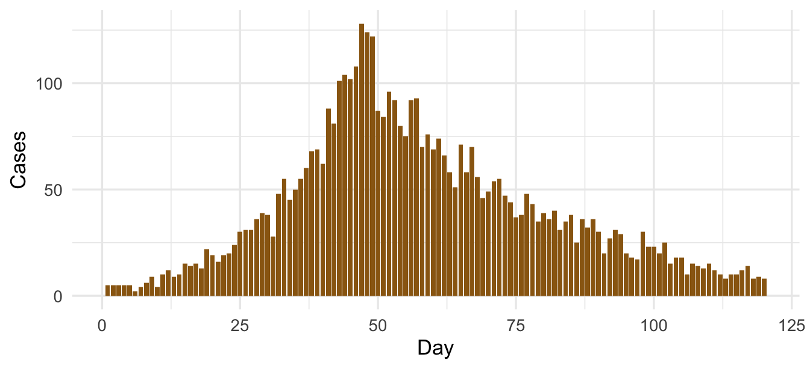
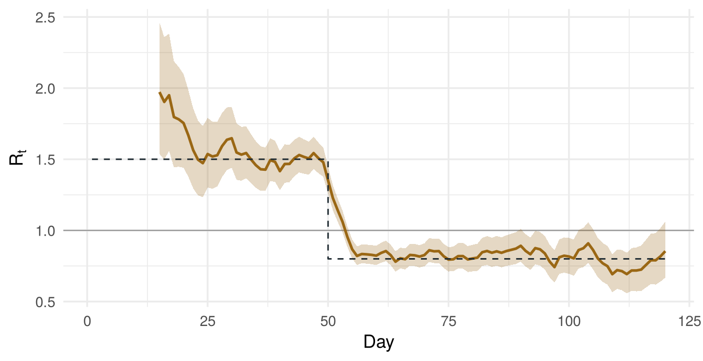

library(ggplot2)
set.seed(1)
days <- 1:120
w <- dgamma(1:21, shape = 6, rate = 1)
w <- w / sum(w)
infectiousness <- function(inc, t) {
s <- 1:min(t - 1, length(w))
sum(inc[t - s] * w[s])
}Estimating Rt with a renewal equation
Methods
Tutorial
Simulate an outbreak from the renewal equation, then recover the time-varying reproduction number.
The renewal equation says that new infections today depend on recent infections, weighted by the generation interval \(w_s\), the chance that \(s\) days separate an infection from the one it causes:
\[ I_t \sim \text{Poisson}\left(R_t \sum_{s \geq 1} I_{t-s}\, w_s\right) \]
This tutorial simulates an outbreak with a known \(R_t\), then estimates it back with the approach of Cori et al. (2013), written out in base R so every step is visible. You’ll need ggplot2 for the plots.
1. Set up the generation interval
A gamma distribution with a mean of six days, cut at three weeks.
2. Simulate an outbreak
\(R_t\) is 1.5 until day 50, when a control measure brings it down to 0.8.
rt_true <- ifelse(days < 50, 1.5, 0.8)
inc <- numeric(length(days))
inc[1:5] <- 5
for (t in 6:length(days)) {
inc[t] <- rpois(1, rt_true[t] * infectiousness(inc, t))
}
ggplot(data.frame(day = days, cases = inc), aes(day, cases)) +
geom_col(fill = "#9A6714", width = 0.85) +
labs(x = "Day", y = "Cases") +
theme_minimal(base_size = 13)
3. Estimate Rt over a sliding window
With a gamma prior on \(R_t\) (shape \(a\), scale \(b\)) and a window of \(\tau\) days, the posterior is also gamma, with shape \(a + \sum I_t\) and rate \(1/b + \sum \Lambda_t\), where \(\Lambda_t\) is the total infectiousness on day \(t\).
tau <- 7
a <- 1
b <- 5
lambda <- c(0, sapply(2:length(days), \(t) infectiousness(inc, t)))
est <- data.frame(day = 15:length(days))
est$shape <- sapply(est$day, \(t) a + sum(inc[(t - tau + 1):t]))
est$rate <- sapply(est$day, \(t) 1 / b + sum(lambda[(t - tau + 1):t]))
est$mean <- est$shape / est$rate
est$lo <- qgamma(0.025, est$shape, est$rate)
est$hi <- qgamma(0.975, est$shape, est$rate)4. Compare with the truth
ggplot(est, aes(day)) +
geom_hline(yintercept = 1, colour = "grey60", linewidth = 0.4) +
geom_ribbon(aes(ymin = lo, ymax = hi), fill = "#9A6714", alpha = 0.25) +
geom_line(aes(y = mean), colour = "#9A6714", linewidth = 0.9) +
geom_step(data = data.frame(day = days, rt = rt_true), aes(y = rt), linetype = "dashed", colour = "#1D2930") +
labs(x = "Day", y = expression(R[t])) +
theme_minimal(base_size = 13)
The estimate tracks the true \(R_t\) and takes about a window’s length to catch up after the drop on day 50.
5. Try it yourself
The same simulation and estimator, running in your browser. Change a setting and the outbreak is simulated again and \(R_t\) re-estimated. The true \(R_t\) is fixed at 1.5, dropping to 0.8 on day 50.
Things to try:
- Assume the wrong generation interval. Leave the true mean at 6 days and set the analyst’s to 4. The estimate is pulled towards 1: about 1.3 instead of 1.5 before the drop, and about 0.87 instead of 0.8 after it. Assume 9 days and it is pushed away from 1 instead, to about 1.8 and 0.73.
- Add imported cases. Set 10 a day, then switch on Count imported cases as local. The estimate is too high, most of all in the first weeks when imported cases outnumber local ones, and after the drop it creeps back towards 1, because imported cases look like local offspring.
- Widen the window. Go from 7 to 21 days. The band narrows, but the estimate takes about two weeks, rather than four days, to fall below 1 after the drop.
The line is left out wherever the window holds fewer than 11 cases, where the estimate reflects the prior more than the data. It starts on day 15, or later for long windows, so no window includes the five days used to seed the outbreak. Your browser draws its own random numbers, so the outbreak differs from the one above, which R generated with set.seed(1).
NoteFor mosquito-borne viruses
The generation interval for dengue or chikungunya includes the time the virus spends developing inside the mosquito, so it is longer than for a respiratory virus and changes with temperature. Imported cases also need separating from local ones, or they inflate \(R_t\). See the chikungunya primer.